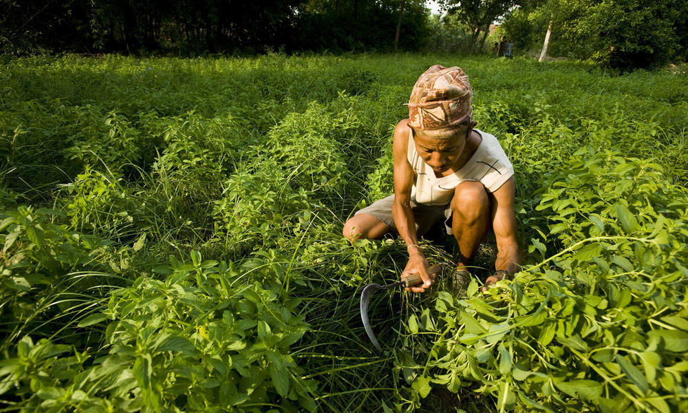

Agricultural Loans
Agricultural loans are availed by a farmer to fund seasonal agricultural operations or related activities like animal farming,
pisci-culture or purchase of land or agricultural tools. This type of loan also helps buying inputs such as fertilizers, seeds,
insecticides etc. and engaging labour for cultivating and harvesting the crops.
In addition, purchasing of land, or purchasing of agricultural tools, storage of produce and transport, cost of ploughing land for sowing, weeding, and transplantation also are included
under purview of agricultural loans.
Farmers can avail an agricultural loan starting at 7% p.a. and with processing fee ranging between zero to 4% of the loan amount.
Documents Required for Agriculture Loans
The documents that you may be asked to submit at the time of applying for an agriculture loan are as follows:
- Duly-filled application form
- KYC documents
- Land/asset documents
- Security PDC
- Any other document mandated by the lender
How to Apply for an Agriculture Loan?
If you are looking to apply for an agriculture loan, it is advisable to research your options online and apply for a loan of your choice by visiting the nearest branch of a lender. When visiting the branch, ensure that you carry the required documentation along with you to quicken the application process.
Certain lenders may also give prospective borrowers the option to apply for an agriculture loan online through their official websites. In this case, you will need to navigate to the respective website, click on ‘Apply Now’, enter the required details in the application form, and upload the necessary documents onto the website.
Regardless of the channel that you choose, the lender will verify your application and approve it. Once your application gets approved, the loan amount will be disbursed into your account.
| Interest rate | 7% p.a. onwards |
| Processing fee | 0% to 4% of the loan amount |
Agricultural Loan Providers
| Bank | Interest Rate | Fee |
|---|
| State Bank of India | 7.25% p.a. onwards | 0% p.a. to 1.25% p.a. of the loan amount |
| ICICI Bank | 9.6% p.a. onwards | 0.5% p.a. to 4% p.a. of the loan amount |
| IDBI Bank | 7% p.a. onwards | At the discretion of the bank |
| IndusInd Bank | 10% p.a. onwards | 1.25% of the loan amount + GST |
| Central Bank of India | Up to 13.25% p.a | At the discretion of the bank |
| Karur Vysya Bank | 8.30% p.a. onwards | At the discretion of the bank |
Types of Agriculture Loan
Given below is the list of types of agriculture loans that you can avail for yourself:
- Crop Loan: These types of loans are also known as Retail Agri Loans is a type of loan which allows a farmer to meet his short-term expenses arising due to cultivation of crops, maintenance of farm equipment, and other post farm activities. The farmer gets a credit card called the Kisan Credit Card on availing this type of loan which they can use to withdraw money to make necessary purchases to meet their farming needs.
- Agricultural Term Loan: These are long term loan schemes which a farmer can avail to meet their non-seasonal expenses. One can avail this loan to buy or upgrade equipment such as windmills, solar power, etc. The repayment tenure for such kind of loan schemes can go up to 4 years allowing the farmer to repay the amount in a convenient manner.
- Solar Pump Set Loan: If a farmer is involved in small irrigation projects and require capital to buy photo voltaic pumping system, then availing a solar pump set loan is the appropriate option. The repayment tenure for such loan schemes go up to 10 years.
- Loan for Allied Agricultural Activities: Farmers involved in allied agricultural activities can apply for such type of loans if they need to raise working capitals to meet their farming expenses.
- Farm Mechanisation Loan: If a farmer requires working capital so that they can either purchase new farming machineries or upgrade their existing ones such as purchasing a new tractor or getting an old one repaired, then they can apply for these types of loan schemes.

Other types of loans
- Agricultural Gold Loan: The applicant can avail this type of loan by pledging their gold ornament as security. The loan amount can be used to meet various farming expenses such as buying machineries or to meet cost related to cultivation of crops. These types of loans are generally offered at a low interest rate and also allows a farmer to use their gold which would otherwise stay idle.
- Forestry Loan: If a person is involved in growing crops which grows on trees, then they can apply for a forestry loan. The loan amount can be used to meet the cost of activities such as converting a barren land into a farming land, setting up irrigation channels, clearing wild trees, etc.
- Horticultural Loan: Farmers involved in setting up vegetable farms and orchards can apply for a horticultural loan which not only allows them to meet the cost of managing such type of farms, but also helps in meeting the expenses related to other horticulture activities such as clearing wild trees, setting up fence, etc.
Some of the banks who provide Agriculture Loan India
| Name of the Bank | Agriculture loan schemes offered |
|---|
| State Bank of India |
- Crop Loan
- Kisan Credit Card
- Multipurpose Gold Loan
- Tractor Loan
- Combine Harvestor Loan
- Drip Irrigation Loan
- Dairy Loan
- Poultry Loan
- Fisheries Loan
- Produce Marketing Loan
- Setting up of Agri Clinic and Agri Business Centres
- Land Purchase Scheme
- SBI Krishak Uthan Yojana
- Scheme for Debt Swapping of Borrowers
|
| National Bank for Agriculture and Rural Development (NABARD) |
Capital Investment Subsidy Scheme for Commercial Production Units for organic/ biological Inputs
Agriclinic and Agribusiness Centres Scheme
National Livestock Mission
|
| Karur Vysya Bank |
Green Harvester
Green Trac
Warehouse Receipt Loan
Jewel Loan
Green Card / Green Card Plus (Kisan Card)
Kisan Tatkal
Green Car
Loans for Horticulture Projects
Two-Wheeler Loan
Dairy Loan
Poultry Loan
Pisciculture Loan
Loans for SHG-JLG
|
| ICICI Bank |
Farmer Finance / Agriculture Loan/ Krishi Loan
Tractor Loan
|
| IndusInd Bank |
Production Loan (CC)
Investment Loan (TL)
Hi-Tech Agriculture (OD)
Hi-Tech Agriculture (TL)
|